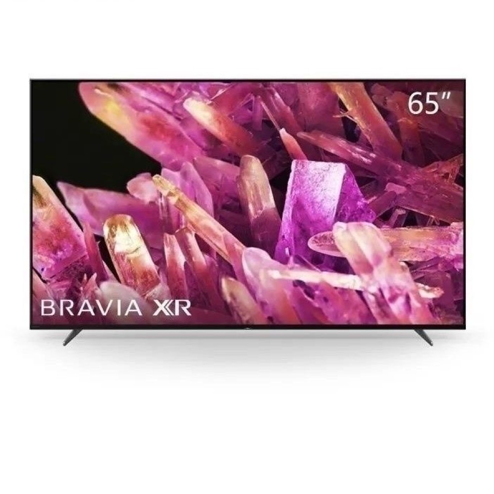
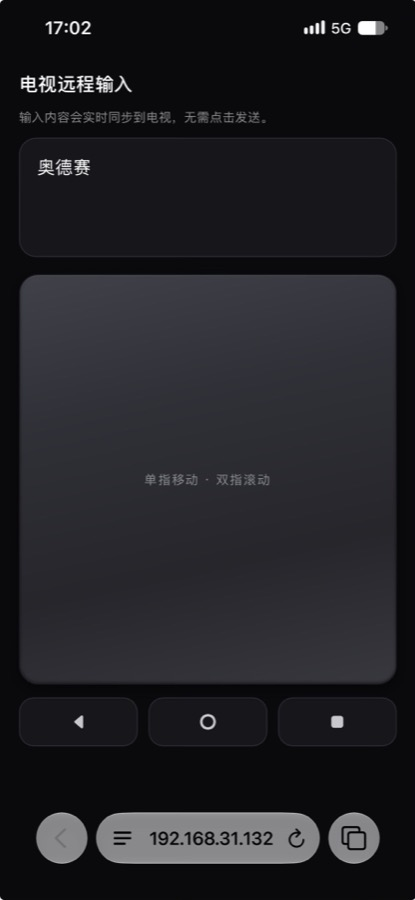

基于 Android AccessibilityService 的完整方案，全部功能在真机上跑通并截图验证。

桌面保留原厂质感，改变的是「到内容」的路径长度：原来翻列表按 5 次方向键，现在按一下电视。
电视、视频、屏显、主页长按——原生几乎用不到的四个键，重新分配成高频入口，长按 2 秒随时改绑。
从「只能搜影视」升级为「通用转写 + 指令执行」，有输入框自动填字，没输入框才当指令。
| 场景 | 旧流程 | 新流程 |
|---|---|---|
| 晚上想看电影 | 主页 → 翻 4 次找影视仓 → 搜索 → 方向键选 12 个字母 | 长按语音说「我想看流浪地球」，2 秒后已在搜索结果页 |
| 搜索框输入中文 | 方向键选拼音 → 翻页找字 → 一个个确认（约 20 秒） | 按屏显 → 手机扫码 → 手机打字 → 电视实时同步 |
| 遥控器不在手边 | 只能起身找 | 手机扫码后当触控板：单指移动光标、轻点选中、双指翻页 |
| 项目 | 值 |
|---|---|
| 商品型号 | Sony BRAVIA XR-65X90J |
| 系统代号 | BRAVIA_VH2 / BRAVIA_VH2_M_CN（国行） |
| 芯片平台 | Valhalla_CHD · SONYANDROIDTV2021M5 |
| 系统版本 | Android 10（SDK 29） |
| 分辨率 | 1920 × 1080 |
理论兼容：Sony BRAVIA 2019–2023 年 Android TV 机型（X8000G ~ X95L），同代 MediaTek M5/M6 平台。
判断方法：adb shell getprop ro.product.device 输出含 BRAVIA_VH2 即高度兼容。
| 顺序 | 按键 | 原生功能 | 改造后 |
|---|---|---|---|
| 1 | 语音 | 索尼语音搜索 | 长按说话 → 自建语音助手 |
| 2 | 电视 | 切天线/有线频道 | 短按开影视仓 / 长按 2 秒改绑 |
| 3 | 视频 | 切视频输入源 | 短按开云视听 / 长按 2 秒改绑 |
| 4 | 屏显 | 显示信号格式信息 | 切换二维码扫码面板 |
| 5 | 主页 | 回主页（长按无定义） | 长按 2 秒清理后台 + 彩带 |
对应遥控器上从上到下的顺序：语音 → 电视 → 视频 → 屏显 → 主页
| 按键 | 键码 | 点按 | 长按 |
|---|---|---|---|
| 语音 | SEARCH 84 | — | 按住说话，松手识别 |
| 电视 | TV 170 | 打开绑定应用（默认影视仓） | 2 秒倒计时 → 应用选择器 |
| 视频 | VIDEO 203 | 打开绑定应用（默认云视听小电视） | 2 秒倒计时 → 应用选择器 |
| 屏显 | INFO 165 | 二维码面板显示/隐藏 | 同点按 |
| 主页 | HOME 3 | 系统默认 | 清理后台 + 彩带特效 |
按遥控器按键从上到下的顺序排列，每个键对应一张实际效果图。

| 输入框 | 随打随同步，无需点发送 |
| 触摸板 | 深空灰，单指移动 · 双指滚动 |
| 导航键 | ◀ 返回 · ○ 主页 · ■ 多任务 |
长按语音说话，识别后填入输入框或执行指令。支持打开应用、调音量、影视搜索、卸载等。
电视/视频可自由绑定应用，短按打开、长按 2 秒重选。已在前台时不重复启动。
长按主页清理后台，完成时洒下 34 片粉色彩带。
按屏显弹出二维码，手机扫码后打字，电视输入框实时同步，无需点发送。
触摸板单指移动、轻点单击、长按、双指滚动，底部三大导航键。
识别器忙重试、引擎心跳重建、连按保护、1.2 秒兜底收起、长按锁键。
| 能力 | 实现 |
|---|---|
| 按键拦截 | onKeyEvent + flagRequestFilterKeyEvents |
| 语音识别 | SpeechRecognizer 调索尼私有 VoiceRecognitionService |
| 文字填入 | ACTION_SET_TEXT |
| 光标/点击 | 全屏 Overlay + dispatchGesture |
| 手机通信 | 内置 ServerSocket HTTP 服务（8080） |
| 二维码 | zxing-core 本地生成 |
canRequestFilterKeyEvents="true" 拦截遥控器按键canPerformGestures="true" 模拟点击滑动canRetrieveWindowContent="true" 读取界面结构
原生 Google TV 桌面换成了开源的 Aerial（app.orchard.tv），
并把预装应用从 20+ 个精简到 10 个，首屏一页看完。
| 保留（10 个） | 隐藏（12 个） |
|---|---|
|
影视仓 · 云视听小电视 · WebView 电视 · 夸克网盘 AirPlay Server · Clash · ES文件浏览器 · Alook Probe（本项目）· 系统设置 |
Google TV 推荐 · Play 影视 · Play 商店 · YouTube YouTube Music · Google 相册 · 索尼精选 · 索尼推荐 电视直播 · 音乐 · 相册 · 帮助指南 |
电视硬件支持 AirPlay 2（规格表标注 APPLE AIRPLAY: Yes），但国行固件未内置接收端。
方案：装开源的 android-airplay-server（io.github.jqssun.airplay v0.0.36）。
| 项 | 说明 |
|---|---|
| 原理 | 电视上跑 AirPlay 接收服务（RTSP + H.264 解码） |
| 依赖 | root（su）+ setenforce 0 |
| 连接 | iPhone 控制中心 → 屏幕镜像 → 选电视 |
| 语音联动 | 说「打开隔空播放」即可启动 |
| 短板 | 4K 降采样到 1080p · 首次握手 2-3 秒 · iOS 17+ 需重新配对 |
| 问题 | 应对 |
|---|---|
卸载重装后网络被切断（EPERM） | standby bucket 掉到 5，再次重装可重置为 50 |
重装丢录音权限（code=9） | pm grant RECORD_AUDIO |
| 重装丢悬浮窗权限 | appops set SYSTEM_ALERT_WINDOW allow |
| 影视仓用自定义键盘 | 改判界面是否有「请输入」提示 |